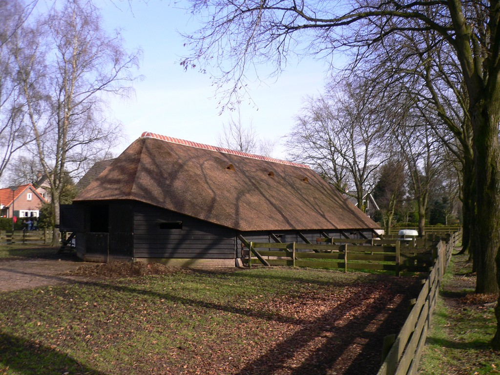
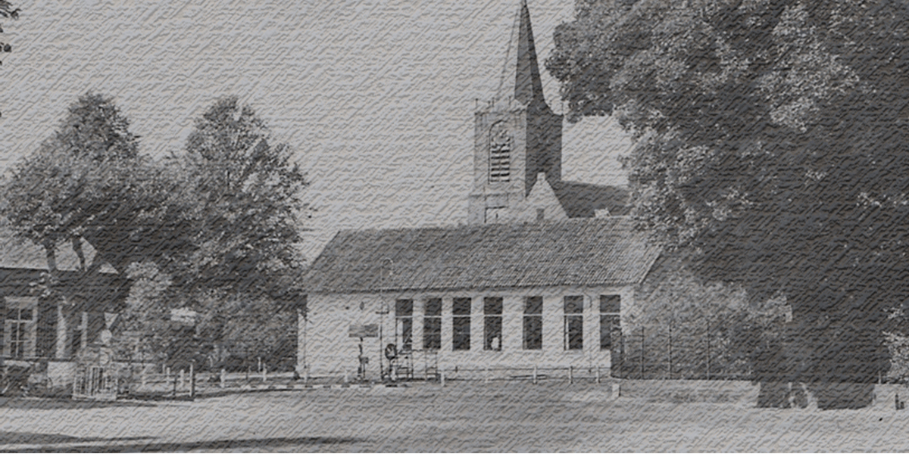

Elspeet

In Elspeet vind je midden in het dorp de prachtige Schaapskooi van de Schaapskudde Elspeterheide, met een grote kudde schapen die dagelijks de heide op gaat. Er worden jaarlijks vele activiteiten georganiseerd, zoals de lammetjesdag, schaapscheerdersfeest en activiteiten als 'Sfeer in de kooi' rond kerst.

Het Historisch Museum Elspeet is een informatief museum, waarin aspecten van Elspeets historie voor het voetlicht worden gebracht. In een aantal opzichten is deze historie uniek, terwijl in andere opzichten dit verleden ook exemplarisch is voor ontwikkelingen op de Veluwe. Beide aspecten krijgen aandacht.